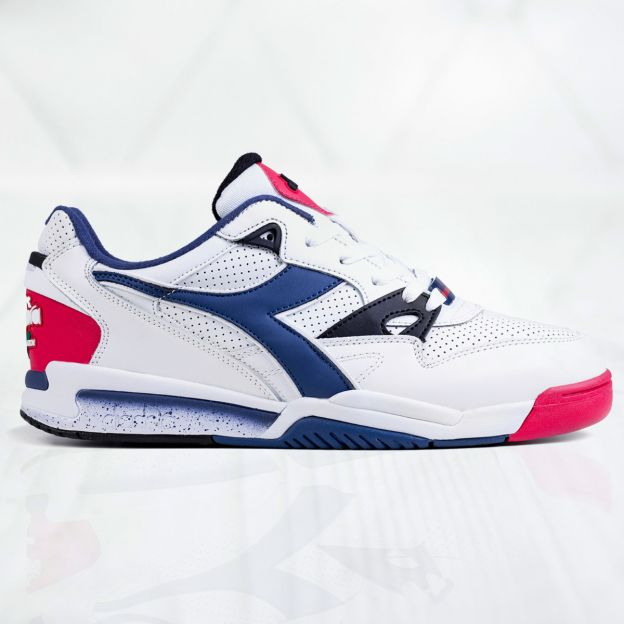

Diadora— итальянская компания, производитель спортивной одежды, обуви и аксессуаров, базирующаяся в Каерано-ди-Сан-Марко в провинции Тревизо. Технический спонсор и создатель униформы для итальянской ассоциации судей.
В 1917 году в Венеции началось изготовление обуви для итальянской армии. Накопленный за время Первой Мировой войны опыт, впоследствии был удачно воспроизведен при изготовлении сапог и горных ботинок, что в свою очередь послужило тому, что по окончании Второй Мировой Войны благодаря Марчелло Даниеле, именно в Венеции на свет появилась марка Diadora. Марчелло Даниеле — основатель компании, выбрал название «Диадора» по совету своих друзей. Это слово происходит из греческого языка и означает «разделение почестей и подарков».
В 1948 году Diadora компания является лучшей мастерской по производству горных ботинок, сделанных вручную. В начале 60-х Диадора встаёт на рельсы промышленного производства, в Америке приобретается штамповочный станок, производство обуви ставится на поток и кроме горной обуви начинается производство лыжных ботинок. 1966 год стал годом рождения исторической эмблемы «пяти шаров» компании Diadora, которая придала стиль торговой марке. Кольца на эмблеме олицетворяли дух Олимпийского движения. За время существования компании эмблема видоизменялась четыре раза, конечный вариант логотипа был утвержден в конце 70-х, но основной принцип «пяти колец» присутствовал во всех четырех интерпретациях. В 1976 году компания пришла в мир футбола. Результат спонсорской деятельности превзошел все ожидания: производство компании Diadora превысило 3 миллиона пар, компания имела более 3500 торговых точек в 45 странах мира. Спортивная обувь, в частности теннисные ботинки, стали неотъемлемой частью повседневной жизни людей. В 80-е годы Diadora нарастила своё присутствие в таких видах спорта, как теннис, легкая атлетика, футбол и расширила свою деятельность на велоспорт, баскетбол, волейбол, автоспорт, бокс, мотоспорт, пятиборье. В 90-е годы Diadora продолжает своё сотрудничество с великими чемпионами, экспериментируя с более передовыми решениями и делая акцент на собственном стиле, который является все более узнаваемым. Один из самых длительных контрактов девяностых был подписан с известным футболистом Роберто Баджо. Сотрудничество с ним длилось около 11 лет, практически от начала карьеры Роберто до его прощального матча. Наиболее известные бренды, принадлежащие группе компаний Diadora, — это Diadora, Invicta, Utility.
За время своего существования «Diadora» подарила миру не мало успешных моделей, ставших эталоном качественной и комфортной обуви. Например, лидирующие позиции занимают такие модели, как универсальная модель «Borg Elite» (симбиоз кроссовок и кед), подходящая для любого подвижного вида спорта и повседневной носки или модель для долгих прогулок «The Queen», выпаленная в ретро-стиле. Не мало интересных и комфортных моделей было выпущено в рамках коллабораций с различными компаниями, брендами и творческими личностями. Совместные проекты бренд имеет с нью-йоркским магазином «Extra Butter», креативным агентством «La MJC», снейкер-магазином «Feature», видеокомпанией «SBTG», дизайнером Rudy Comazzetto (который работал в команде «Diadora»), компанией «BAIT», ритейлом «Concept», нью-йоркской сетью магазинов «Barneys», дизайнером Ronnie Fieg, японским ритейлом «Mita sneakers», компанией «Patta» и т.д. Также оригинальные дизайнерские модели ограниченном тиражом бренд выпускает в рамках какого-либо знакового события: в честь ливерпульского фестиваля «Laces Out» модель N.9000 в двух цветах, в честь выхода дебютного сольного альбома рок-музыканта Raekwon бренд вместе с магазином «Packer Shoes» из Нью-Джерси выпустили уникальную версию всё тоё же модели N.9000. В конце лета 2016-го года компания «Diadora» создала совместно с американским дизайнером Ронни Файгом кроссовки из нубука и замши, выпуск которых был посвящен Олимпийским играм в Рио-де-Жанейро. Благодаря своему многолетнему опыту и уникальному стилю, а также опыту партнеров, бренд предлагает своим поклонникам самые разнообразные модели обуви: классического дизайна, яркие или сдержанные, для самых разных видов спорта или активного время препровождения. Компания входит в число самых крупных и уважаемых производителей спортивной обуви и не собирается сбавлять оборотов. Diadora. От греческого «делиться подарками и почестями». Здесь, в буквальном смысле, названия компании. Его долгая история началась в 1948 году с мастерской, которая выпускает горные ботинки, которые за короткое время становятся лучшими горными ботинками на рынке. В 60-е годы Diadora начинает приближаться к миру спорта, с высоким качеством и ультрасовременной одеждой. В 70-х годах рекламные компании с известними спорцменами как Бьорн Борг, Роберто Беттега, Марко Ван Бастен, Роберто Баджо, стали настоящими значками стиля. Нва сегодняшний день Diadora входит в список самых популярных кроссовок в истории.За время своего существования «Diadora» подарила миру не мало успешных моделей, ставших эталоном качественной и комфортной обуви. Например, лидирующие позиции занимают такие модели, как универсальная модель «Borg Elite» (симбиоз кроссовок и кед), подходящая для любого подвижного вида спорта и повседневной носки или модель для долгих прогулок «The Queen», выпаленная в ретро-стиле. Не мало интересных и комфортных моделей было выпущено в рамках коллабораций с различными компаниями, брендами и творческими личностями. Совместные проекты бренд имеет с нью-йоркским магазином «Extra Butter», креативным агентством «La MJC», снейкер-магазином «Feature», видеокомпанией «SBTG», дизайнером Rudy Comazzetto (который работал в команде «Diadora»), компанией «BAIT», ритейлом «Concept», нью-йоркской сетью магазинов «Barneys», дизайнером Ronnie Fieg, японским ритейлом «Mita sneakers», компанией «Patta» и т.д.